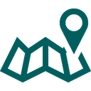
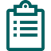

About stealth
Every 98 seconds, an American is sexually assaulted.
Because of this statistic, we felt it was important for us to create a sort of social media support network
for those who experience everything from inappropriate comments in the workplace and at school, to sexual
assault.

Our map feature will show you local resources, from health clinics to law offices. By giving users the option
to enter their own zip code, we don’t have to use the location of the user to help them feel more secure.
Our website has a feed where users can post and comment on the experiences of others. By authenticating a
users profile and requiring log-in to post, as well as having a comprehensive report and block feature,
we are providing our users with safety. The anonymous posting option also allows users to stay anonymous,
however they are promoted to keep specific identifiers out of their posts in case someone involved or
someone they know also happens to be on this site, too.

The resources tab offers external resources for a wide range of services, from government-sponsored departments
to online chats and hotlines available 24/7. We hope our users can find what they need and we realize
we are not the only site that can provide them with the support they require.
Our AI Chat bot, Stella, can provide you with other specific resource based on the information you provide
it. If you give Stella your zip code and ask it for legal advice, Stella can link you to the website
of a local law office that can provide you with the assistance you need.
Your profile page will keep track of all the posts you make and follow, even if you have done so anonymously.
This way, you are able to go back to see if someone has offered you any support or has any ideas for
how you can handle the situation.
Our name, stealth, is a reference to the teal used for the Sexual Assault Awareness ribbon (imagine: sTEALth)
and the fact that users may want to keep their identities and stories private, or stealthy if you will.